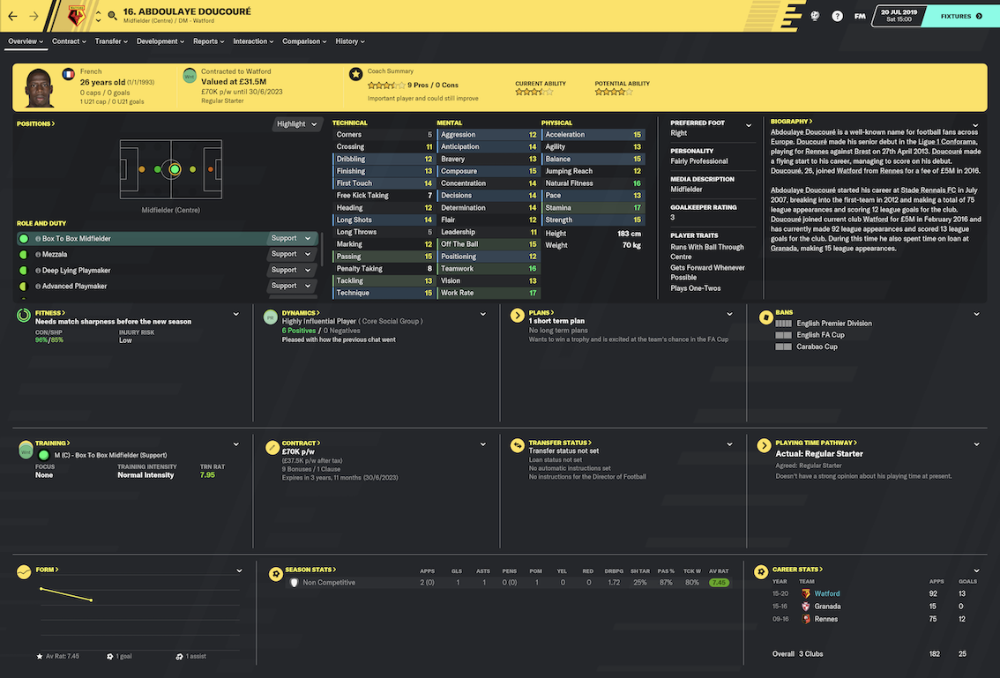
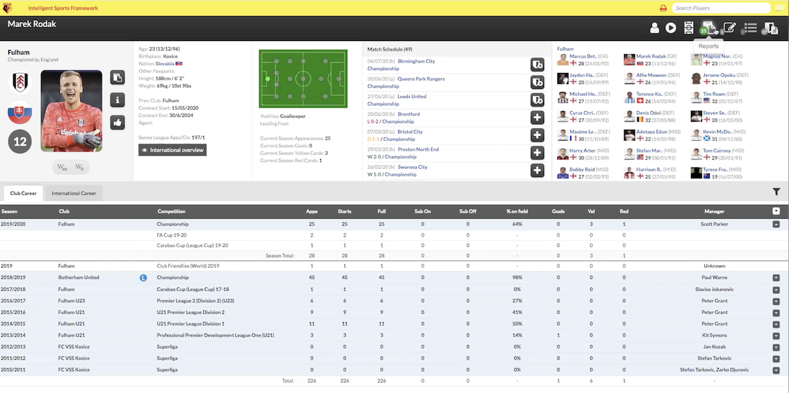
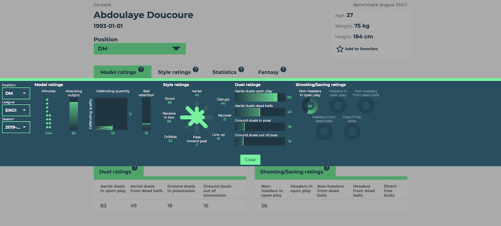
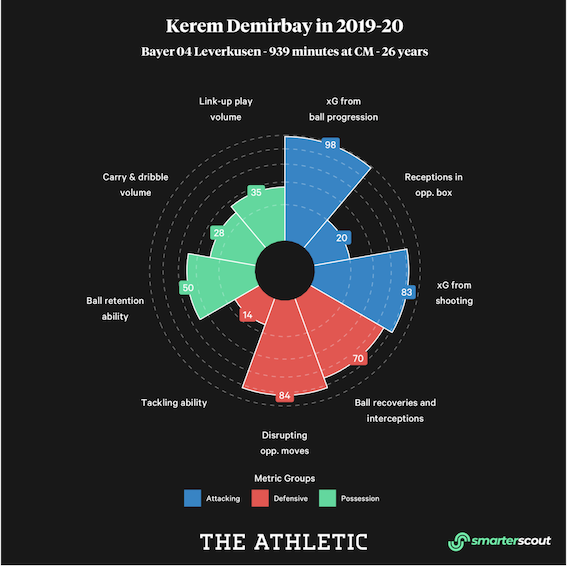
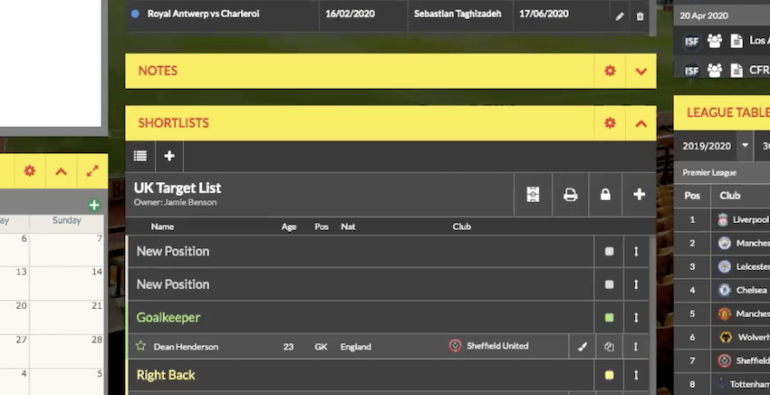
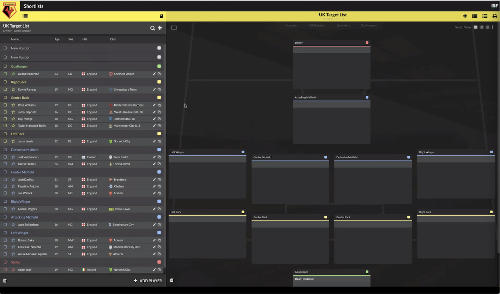
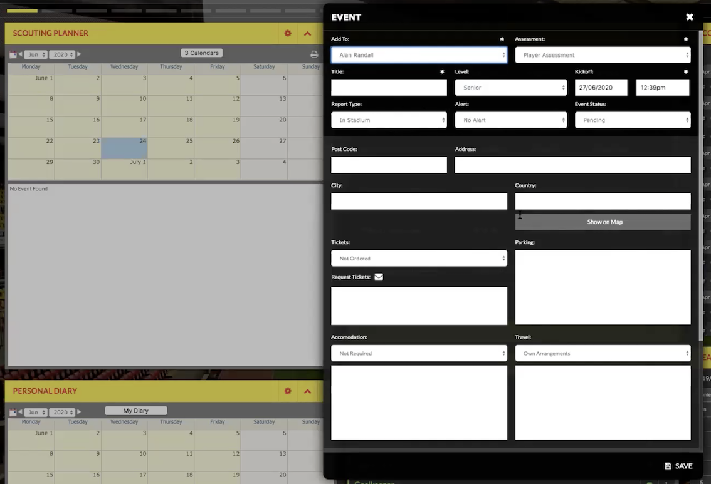
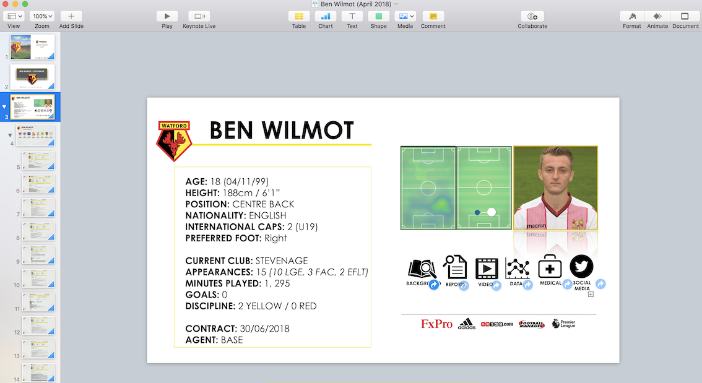
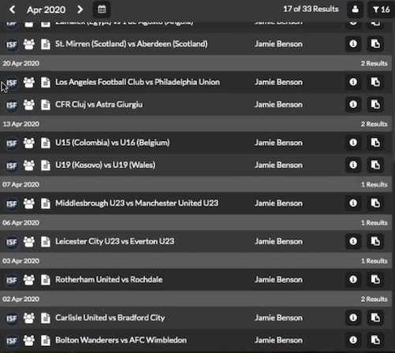

/
/
/
/
/
User-focused Product Description
Case Study (Technical Director): A substantial bid arrives for Abdoulaye Doucoure. What should I do?
1. Use the Player’s Profile to make an initial assessment

Doucoure’s FM20 profile

Example of a Scout7 profile
- Use Valuation screen to get an assessment of the player and see if the bid matches his value (PLAYER PROFILE - VALUATION)
- Player value displayed on their profile, clicking their value navigates to Valuation screen
- Breakdown of how player’s value is calculated (ability, contract years left etc)
- Check player’s recent statistical form (PLAYER PROFILE - STATS)
- Compact graph on profile, clicking on it navigates to fuller statistical overview
(As in FM, a player’s profile will have different features when they play for the user’s team than if they play for another team)

Player Profile screen from Smarterscout

Player Radar from Smarterscout
- Check training data (PLAYER PROFILE - TRAINING)
- View player’s medical notes/injury history (PLAYER PROFILE - HEALTH)
- Assess current squad situation and how his departure would affect squad makeup (SQUAD - DEPTH)
- View future depth charts and see if there will be a solution in the position in future years (SQUAD - FUTURE DEPTH)
- Compare player to other’s in the squad (PLAYER PROFILE - COMPARISON)
- Check contractual information (PLAYER PROFILE - CONTRACT)
- Speak to player’s agent (PLAYER PROFILE - CONTRACT)
- View player’s playing history for club and country (PLAYER PROFILE - HISTORY)
- Check recent news about their player and their social media accounts (PLAYER PROFILE - MEDIA)
- View player’s FM biography (PLAYER PROFILE - BIO)
- Link to Wikipedia in language of user’s choosing
2. Identify a potential replacement
- Search existing reports for central midfielders (REPORTS)
- Use ‘Find Replacement’ tool to auto-generate list of players with similar FM attributes (SCOUTING)
- Filter by players with similar ‘Playing Styles’
- Generate a list of statistically similar players (SCOUTING)
- Manually search FM database for central midfielders (SCOUTING)
- Search players tagged with ‘Offered by Agent’ (SCOUTING - TAGS)
- Use ‘Player Comparison’ tool to judge players against Doucoure, other squad members and other potential candidates (PLAYER PROFILE - COMPARISON)
3. Create Shortlists
- Add suitable players to shortlist created for this specific task (SHORTLIST)
- Shortlist columns include Name, Club, Nation, Position, Value, Scouted (Y/N), CA, PA, Report Average, - Recommendation, Next Fixture (with link to game to assign scout), Agent
- Shortlist viewable both as a widget and in a dedicated page

Scout7 shortlist as a widget

Scout7 Shortlist Screen
- Sort players into order of preference (SHORTLIST - SORT)
- Use shortlist comparison to find the best player on the shortlist in specific attributes/statistics (SHORTLIST - COMPARISON)
- Remove unsuitable players/move them to another shortlist (SHORTLIST)
- Assign scouts to view selected players (PLANNER)
- The Event Planner makes it very easy to organise an individual scouting trip on one page
- It will be connected to an extensive list of matches and auto-populate based on the match chosen
- Scout receives an email and/or phone notification once the event planning is completed, as well as email/notification of any updates to the event

Scout7 Event Planner
- User can ‘watch’ shortlist to be notified/emailed of any changes/reports on players on the shortlist (SHORTLIST)
- Add players to depth charts including current players to see how they would impact squad makeup (SQUAD- CONCEPTUAL DEPTH)
4. Acquire Targets
- Refine list further after reading scout reports (SHORTLIST)
- If a firm decision has been made to pursue a player, tag them as ‘Target’ or ‘Top Target’ (SHORTLIST)
- Use ‘Presentation Editor’ to create a full report on targets to present to decision makers (PRESENTATION)

Example of Keynote player presenation currently used by Watford
- Contact players’ agents and check availability (PLAYER PROFILE - CONTRACT)
- Contact players’ clubs and check availability (PLAYER PROFILE - CONTRACT)
Once these steps have been taken, the Technical Director should have all of the information required to make an informed decision on whether to accept/negotiate the bid for Doucoure with a strong list of options to replace him should the player leave.
Case Study: (Technical Director) After a disappointing transfer window, how to prepare better for the next one?
- ‘Window Review’ analyses recruitment activity over a set period (default of 6 months for Summer/Winter windows but editable) (WINDOW REVIEW)
- Check that there were suitable targets on the club’s radar throughout the window
- ‘Timeline’ allows the user to view dashboards on certain dates and scroll through chronologically, day-by-day (TIMELINE)
- ‘Scouting History’ shows all reports within a certain time period (SCOUTING HISTORY)

Scout7 Scouting History
2. Assess Individuals with Scout Records
- The Staff/Organisation screen shows all recruitment staff along with stats like total reports (STAFF)
- Staff Profiles (STAFF PROFILE)
- Show all reports that they have submitted and a planner of their past and future games
- Averages of their scoring history
- Data on their recommended players that are on shortlists and that have been signed
- Would need to have some sort of way of rating scout performance